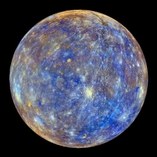
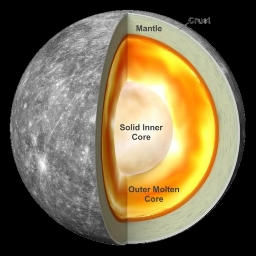
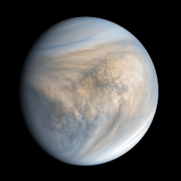
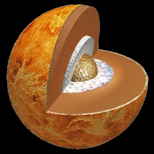
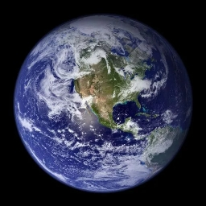
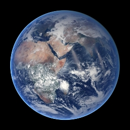
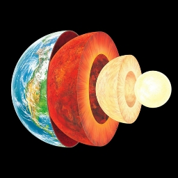

The Solar System is the gravitationally bound system of the Sun and the objects that orbit it, either directly or indirectly. Of the objects that orbit the Sun directly, the largest are the eight planets, with the remainder being smaller objects, the dwarf planets and small Solar System bodies. Of the objects that orbit the Sun indirectly—the natural satellites—two are larger than the smallest planet, Mercury.The Solar System formed 4.6 billion years ago from the gravitational collapse of a giant interstellar molecular cloud. The vast majority of the system's mass is in the Sun, with the majority of the remaining mass contained in Jupiter. The four smaller inner system planets, Mercury, Venus, Earth and Mars, are terrestrial planets, being primarily composed of rock and metal. The four outer system planets are giant planets, being substantially more massive than the terrestrials.
Mercury is the smallest planet in the Solar System and the closest to the Sun. Its orbit around the Sun takes 87.97 Earth days, the shortest of all the Sun's planets. It is named after the Roman god Mercurius (Mercury), god of commerce, messenger of the gods, and mediator between gods and mortals, corresponding to the Greek god Hermes (Ἑρμῆς). Like Venus, Mercury orbits the Sun within Earth's orbit as an inferior planet, and its apparent distance from the Sun as viewed from Earth never exceeds 28°


‹
›
Name
Mercury
Semi Major Axis
57909227 km
perihelion
46001200 km
aphelion
69816900 km
eccentricity
0.2056
inclination
7 °
length of year
87.969 days
length of a day
1407.6 hours
axial tilt
0.0352 °
mean anomaly
174.796 °
moons
No moons
mass
3.30114 × 10^23 kg
volume
6.083 × 10^10 m^3
density
5.4291 g/cm^3
gravity
3.7 m/s^2
escape velocity
4250 m/s
mean radius
2439.4 m
equilateral radius
2440.53 m
polar radius
2439.7 m
flattening
0
. This proximity to the Sun means the planet can only be seen near the western horizon after sunset or the eastern horizon before sunrise, usually in twilight. At this time, it may appear as a bright star-like object but is often far more difficult to observe than Venus. From Earth, the planet telescopically displays the complete range of phases, similar to Venus and the Moon, which recurs over its synodic period of approximately 116 days.
Mercury rotates in a way that is unique in the Solar System. It is tidally locked with the Sun in a 3:2 spin–orbit resonance, meaning that relative to the fixed stars, it rotates on its axis exactly three times for every two revolutions it makes around the Sun. As seen from the Sun, in a frame of reference that rotates with the orbital motion, it appears to rotate only once every two Mercurian years. An observer on Mercury would therefore see only one day every two Mercurian years.
Mercury's axis has the smallest tilt of any of the Solar System's planets (about 1⁄30 degree). Its orbital eccentricity is the largest of all known planets in the Solar System; at perihelion, Mercury's distance from the Sun is only about two-thirds (or 66%) of its distance at aphelion. Mercury's surface appears heavily cratered and is similar in appearance to the Moon's, indicating that it has been geologically inactive for billions of years. Having almost no atmosphere to retain heat, it has surface temperatures that vary diurnally more than on any other planet in the Solar System, ranging from 100 K (−173 °C; −280 °F) at night to 700 K (427 °C; 800 °F) during the day across the equatorial regions. The polar regions are constantly below 180 K (−93 °C; −136 °F). The planet has no known natural satellites.
Two spacecraft have visited Mercury: Mariner 10 flew by in 1974 and 1975; and MESSENGER, launched in 2004, orbited Mercury over 4,000 times in four years before exhausting its fuel and crashing into the planet's surface on April 30, 2015. The BepiColombo spacecraft is planned to arrive at Mercury in 2025.
Venus is the second planet from the Sun. It is named after the Roman goddess of love and beauty. As the brightest natural object in Earth's night sky after the Moon, Venus can cast shadows and can be, on rare occasions, visible to the naked eye in broad daylight. Venus lies within Earth's orbit, and so never appears to venture far from the Sun, either setting in the west just after dusk or rising in the east a little while before dawn. Venus orbits the Sun every 224


‹
›
Name
Venus
Semi Major Axis
108208475 km
perihelion
107477000 km
aphelion
108939000 km
eccentricity
0.0067
inclination
3.39 °
length of year
224.701 days
length of a day
-5832.5 hours
axial tilt
177.36 °
mean anomaly
50.115 °
moons
No moons
mass
4.86747 × 10^24 kg
volume
9.2843 × 10^11 m^3
density
5.243 g/cm^3
gravity
8.87 m/s^2
escape velocity
10360 m/s
mean radius
6051.8 m
equilateral radius
6051.8 m
polar radius
6051.8 m
flattening
0
.7 Earth days. It has a synodic day length of 117 Earth days and a sidereal rotation period of 243 Earth days. As a consequence, it takes longer to rotate about its axis than any other planet in the Solar System, and does so in the opposite direction to all but Uranus. This means the Sun rises in the west and sets in the east. Venus does not have any moons, a distinction it shares only with Mercury among the planets in the Solar System.Venus is a terrestrial planet and is sometimes called Earth's "sister planet" because of their similar size, mass, proximity to the Sun, and bulk composition. It is radically different from Earth in other respects. It has the densest atmosphere of the four terrestrial planets, consisting of more than 96% carbon dioxide. The atmospheric pressure at the planet's surface is about 92 times the sea level pressure of Earth, or roughly the pressure at 900 m (3,000 ft) underwater on Earth. Even though Mercury is closer to the Sun, Venus has the hottest surface of any planet in the Solar System, with a mean temperature of 737 K (464 °C; 867 °F). Venus is shrouded by an opaque layer of highly reflective clouds of sulfuric acid, preventing its surface from being seen from space in visible light. It may have had water oceans in the past, but these would have vaporized as the temperature rose under a runaway greenhouse effect. The water has probably photodissociated, and the free hydrogen has been swept into interplanetary space by the solar wind because of the lack of a planetary magnetic field.As one of the brightest objects in the sky, Venus has been a major fixture in human culture for as long as records have existed. It has been made sacred to gods of many cultures, and has been a prime inspiration for writers and poets as the "morning star" and "evening star". Venus was the first planet to have its motions plotted across the sky, as early as the second millennium BC.Its proximity to Earth has made Venus a prime target for early interplanetary exploration. It was the first planet beyond Earth visited by a spacecraft (Mariner 2 in 1962), and the first to be successfully landed on (by Venera 7 in 1970). Venus's thick clouds render observation of its surface impossible in visible light, and the first detailed maps did not emerge until the arrival of the Magellan orbiter in 1991. Plans have been proposed for rovers or more complex missions, but they are hindered by Venus's hostile surface conditions. The possibility of life on Venus has long been a topic of speculation, and in recent years has received active research.
Earth is the third planet from the Sun and the only astronomical object known to harbour and support life. About 29.2% of Earth's surface is land consisting of continents and islands. The remaining 70.8% is covered with water, mostly by oceans, seas, gulfs, and other salt-water bodies, but also by lakes, rivers, and other freshwater, which together constitute the hydrosphere



‹
›
Name
Earth
Semi Major Axis
149598262 km
perihelion
147095000 km
aphelion
152100000 km
eccentricity
0.0167
inclination
0 °
length of year
365.256 days
length of a day
23.9345 hours
axial tilt
23.4393 °
mean anomaly
358.617 °
moons
La Lune
mass
5.97237 × 10^24 kg
volume
1.08321 × 10^12 m^3
density
5.5136 g/cm^3
gravity
9.8 m/s^2
escape velocity
11190 m/s
mean radius
6371.0084 m
equilateral radius
6378.1366 m
polar radius
6356.8 m
flattening
0.00335
. Much of Earth's polar regions are covered in ice. Earth's outer layer is divided into several rigid tectonic plates that migrate across the surface over many millions of years, while its interior remains active with a solid iron inner core, a liquid outer core that generates Earth's magnetic field, and a convective mantle that drives plate tectonics.
Earth's atmosphere consists mostly of nitrogen and oxygen. More solar energy is received by tropical regions than polar regions and is redistributed by atmospheric and ocean circulation. Greenhouse gases also play an important role in regulating the surface temperature. A region's climate is not only determined by latitude, but also by elevation and proximity to moderating oceans, among other factors. Severe weather, such as tropical cyclones, thunderstorms, and heatwaves, occurs in most areas and greatly impacts life.
Earth's gravity interacts with other objects in space, especially the Moon, which is Earth's only natural satellite. Earth orbits around the Sun in about 365.25 days. Earth's axis of rotation is tilted with respect to its orbital plane, producing seasons on Earth. The gravitational interaction between Earth and the Moon causes tides, stabilizes Earth's orientation on its axis, and gradually slows its rotation. Earth is the densest planet in the Solar System and the largest and most massive of the four rocky planets.
According to radiometric dating estimation and other evidence, Earth formed over 4.5 billion years ago. Within the first billion years of Earth's history, life appeared in the oceans and began to affect Earth's atmosphere and surface, leading to the proliferation of anaerobic and, later, aerobic organisms. Some geological evidence indicates that life may have arisen as early as 4.1 billion years ago. Since then, the combination of Earth's distance from the Sun, physical properties, and geological history have allowed life to evolve and thrive. In the history of life on Earth, biodiversity has gone through long periods of expansion, occasionally punctuated by mass extinctions. More than 99% of all species that ever lived on Earth are extinct. Almost 8 billion humans live on Earth and depend on its biosphere and natural resources for their survival. Humans increasingly impact Earth's surface, hydrology, atmospheric processes, and other life.